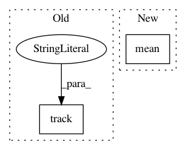

df7d86f4d1521efc24fcf41fa8a829977fef04e6,ch12/train_scst.py,,,#,18
Before Change
tb_tracker.track("bleu", (sum_argmax_bleu + skipped_samples) / total_samples, batch_idx)
tb_tracker.track("bleu_argmax", sum_argmax_bleu / cnt_argmax_bleu, batch_idx)
tb_tracker.track("bleu_sample", sum_sample_bleu / cnt_sample_bleu, batch_idx)
tb_tracker.track("advantage", adv_v, batch_idx)
// tb_tracker.track("loss_entropy", entropy_loss_v, batch_idx)
tb_tracker.track("loss_policy", loss_policy_v, batch_idx)
tb_tracker.track("loss_total", loss_v, batch_idx)
After Change
tb_tracker.track("loss_policy", loss_policy_v, batch_idx)
tb_tracker.track("loss_total", loss_v, batch_idx)
writer.add_scalar("bleu", np.mean(bleus_argmax + [1.0] * skipped_samples), batch_idx)
writer.add_scalar("bleu_argmax", np.mean(bleus_argmax), batch_idx)
writer.add_scalar("bleu_sample", np.mean(bleus_sample), batch_idx)
writer.add_scalar("skipped_samples", skipped_samples / total_samples, batch_idx)
In pattern: SUPERPATTERN
Frequency: 3
Non-data size: 2
Instances
Project Name: PacktPublishing/Deep-Reinforcement-Learning-Hands-On
Commit Name: df7d86f4d1521efc24fcf41fa8a829977fef04e6
Time: 2018-01-08
Author: max.lapan@gmail.com
File Name: ch12/train_scst.py
Class Name:
Method Name:
Project Name: PacktPublishing/Deep-Reinforcement-Learning-Hands-On
Commit Name: 21434a6920120a4d83a75e340474ef4c7c6ad972
Time: 2018-02-11
Author: max.lapan@gmail.com
File Name: ch15/04_train_ppo.py
Class Name:
Method Name:
Project Name: PacktPublishing/Deep-Reinforcement-Learning-Hands-On
Commit Name: 8d52bd0b09152b02e0a5504d33593d0c290b88c7
Time: 2018-02-05
Author: max.lapan@gmail.com
File Name: ch14/06_train_d4pg.py
Class Name:
Method Name: